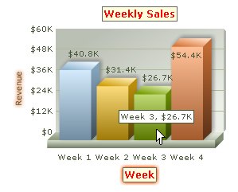

| Applying Styles |
|
Using FusionCharts ASP Class API we can apply various styles to the charts. Style lends a simple mechanism using which you can easily control the visual layout of charts. For each defined object on a chart, you can apply one or more styles like animation bevel, blur, font, shadow and glow. Let's see how we can accomplish this using FusionCharts ASP Class. The defineStyle() and applyStyle() functions of FusionCharts ASP Class let you apply styles to various objects of the chart. The process of applying styles involves two steps:
Let's take an example. |
' Define a Font Style element Call FC.defineStyle("MyFirstFontStyle","font","font=Verdana;size=12;color=FF0000; bgColor=FFFFDD;borderColor=666666") ' Define a Glow Style element Call FC.defineStyle("MyFirstGlow","Glow","color=FF5904;alpha=75") ' Apply FONT Style to CAPTION object Call FC.applyStyle("CAPTION","MyFirstFontStyle") ' Apply FONT and GLOW Style to XAXISNAME object Call FC.applyStyle("XAXISNAME","MyFirstGlow,MyFirstFontStyle") ' Apply GLOW Style to YAXISNAME object Call FC.applyStyle("YAXISNAME","MyFirstGlow") |
|
At first, we define two style elements using the defineStyle()function. The defineStyle () function takes three parameters viz. custom name, style type, and style attributes. First we define a style and name it as "MyFirstFontStyle". It is of "Font" type. The attributes defined in it are font, size, color, border color and background color. Then, we define style "MyFirstGlow" of "Glow" type. The attributes defined in it are color and alpha (that is, transparency). Next, we apply those two defined styles to the chart objects. The first applyStyle() function applies style "MyFirstFontStyle" to the "CAPTION" object of the chart. The next applyStyle() applies both "MyFirstGlow" and "MyFirstFontStyle" to "XAXISNAME". So it gives the "Glow" effect and the "Font" effect together. The last applyStyle() applies the style "MyFirstGlow" to "YAXISNAME". |
| Please go through FusionCharts XT Styles section to know more about the various style types and how they are applied with various attributes. |
And the resultant chart is:  |